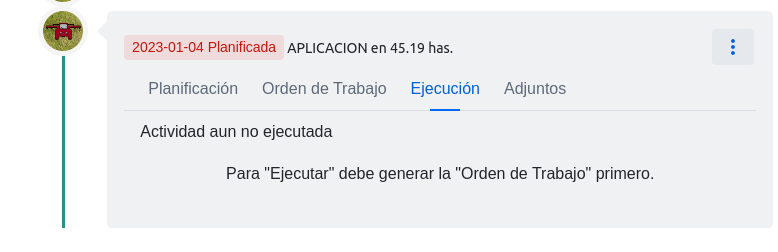
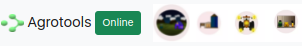
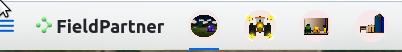
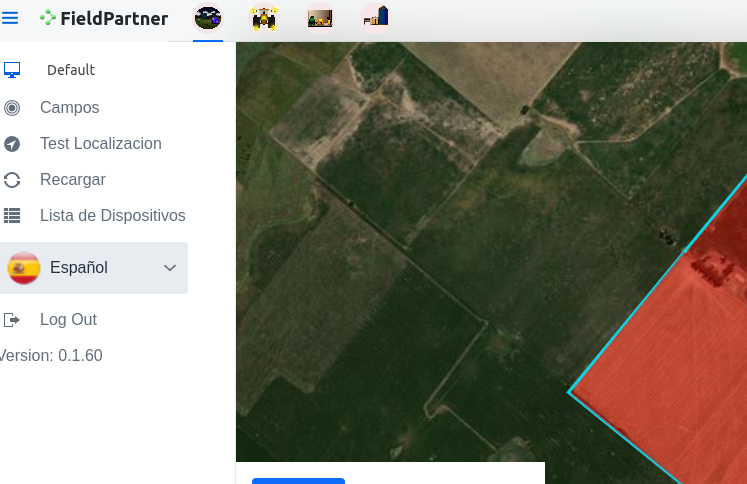
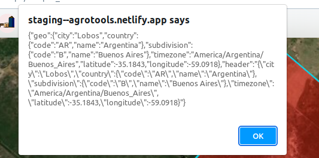

Cada item de la lista de insumos muestra (segun se encuentren completados para cada insumo):
- Nombre Comercial
- Principio Activo
- Pildora coloreada con “tipo-subtipo”
- Pildora coloreada con cada cultivo de la lista “Se aplica a”
Para filtrar y limitar los insumos visibles se añadio un botón con el ícono de filtro en el ComboBox selector de insumo en donde se listan las distintas categorias de los mismos.
Por defecto se seleccionan algunas categorias de acuerdo al tipo de actividad en cuestion:
1 - Siembra -> “Semillas”, “Combustibles”
2 - Aplicacion -> “Agroquimicos”, “Fertilizantes”, “Combustible”
3 - Cosecha -> “Otros”, “Combustible”
Independientemente de las categorias seleccionadas por defecto el usuario puede seleccionar/deseleccionar categorias a discrecion.
Se realizan los siguientes chequeos antes de guardar la
planificación
de una actividad:
* Todos los tipos:
- Fecha tentativa de ejecucion dentro de la campaña.
- Debe seleccionar un contratista.
- Debe seleccionar un al menos insumo.
- Siembra
– Debe selecionar al menos un insumo de semilla
– Debe ingresar una labor de ‘Siembra’
- Cosecha
– Debe ingresar una labor de ‘Cosecha’
Se realizan los siguientes chequeos antes de guardar la
ejecución
de una actividad:
- Todos los tipos:
– Fecha de ejecucion posterior o igual a la planificación y dentro de la campaña.
– Debe seleccionar un al menos insumo.
- Siembra
– Debe selecionar al menos un insumo de semilla
– Debe ingresar una labor de ‘Siembra’
- Cosecha
– Debe ingresar una labor de ‘Cosecha’
En la lista de insumos se realizaron los siguienes cambios:
- Caja de busqueda para filtrado rapido. El filtro devuelve los insumos en donde:
– El string forma parte del nombre comercial.
– El string forma parte del principio activo.
– El string forma parte del alguno de los nombres de los cultivos especificados en la lista de “se aplica a” que corresponde a ese insumo.
Zip con todo el codigo de la app (frontend):
Cuando se abre una nueva nota, la ubicacion por defecto se cambio por el mapa en vez del dispositivo para evitar desplazamientos si el usuario no esta en el lote en cuestion.
Para “Ejecutar” es necesario generar al menos una vez la orden de trabajo.

En el menú de item de linea de tiempo (tarjeta de actividad, esquina superior derecha) se añadio un botón “Ejecución vs Planificación PDF” que abre un PDF mostrando las tablas de insumos de planificación/ejecución.
Se cambiaron todas las referencias al string “Agrotools” por “FieldPartner”
No deberia quedar ninguna referencia a Agrotools.
Se modifico el layout de navegacion principal dejando solo el logo y los botones principales en la barra de navegación y moviendo el resto a un cajon accessible via el boton arriba a la izquierda.
Se modificaron los iconos provistos quitandoles los fondos blancos y pasandolos a transparentes.
Se unificaron la dimensiones de los mismos.



Partiendo de los comentarios del reporte () y a modo de prueba, en el menú se añadio un item llamado “Test Localización” realiza un request a un endpoint creado especialmente en el sitio (ej “
https://dev--agrotools.netlify.app/geolocation"
) que devuelve la geolocalizacion basado en la IP de origen del request.
En la app se imprime un alert con la respuesta de este endpoint.

Saturday, 07. January 2023 02:00PM